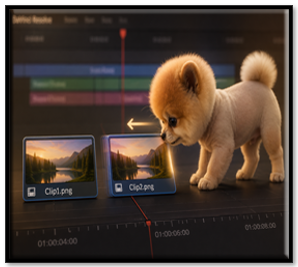

~5 How to Nudge and Align Clips in DaVinci Resolve~
6/29/2026

Select the clip, hit the comma key or the period key to nudge it backwards or forward on the timeline.
When you’re lining up your crawl:
Do this:
- Park playhead on the cut point
- Press:
- Left Arrow → go to last frame of Clip A
- Right Arrow → go to first frame of Clip B
- Then:
- Tap , or . to nudge Clip B
- Watch text alignment in viewer
And that’s really all there is to nudging a clip in DaVinci Resolve. A tiny adjustment can make a big difference, especially when you’re lining up text, crawls, or any moment that needs frame‑perfect timing. Once you get comfortable with these little keyboard taps, you’ll find yourself fixing alignment issues in seconds instead of minutes — one gentle nudge at a time.